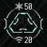

Hacking
| The Explorer's Handbook |
|---|
Overview of Hacking Minigame[edit]
The Hacking Minigame is used to access secured containers (aka "cans"), usually found in Relic and Data sites. The game board represents the electronic lock protecting the container, and you are directing the actions of a virus attempting to break this lock, with the aim of the game being to defeat the System Core. Doing so allows you to access the container and take the loot inside. The System Core is initially hidden, so you'll need to find it first.
To play the minigame, you need to target the container and activate an appropriate hacking module (Data Analyzer for Data Sites and Relic Analyzer for Relic Sites). Both types of Analyzer are available in Tech 1 and Tech 2 variants, fitting in a mid slot. Integrated Analyzers can hack both Data and Relic Sites using only one mid slot, but make trade-offs to gain this flexibility.
You'll be presented with a field consisting of multiple coloured interconnected nodes. Your spawn location and all nodes you've already explored are marked orange. Adjacent to them are green nodes which are available for you to explore. While grey nodes are too far away to be accessed.
Clicking on nodes reveals their contents that can either ease or complicate further moves: a system core, defensive subsystems, utility subsystems, data caches or nothing at all.
The virus has strength and coherence attributes which can be used to fight the system core and defence subsystems.
Strength / Coherence[edit]
Your virus, the system core and all defensive subsystems have two primary attributes: Strength and Coherence.
Strength ( ) is used to attack. It represents the amount of damage the virus deals to hostile nodes and vice versa.
) is used to attack. It represents the amount of damage the virus deals to hostile nodes and vice versa.
Coherence ( ) is used to resist against attacks. It represents the amount of damage the virus and hostile nodes can withstand before being destroyed.
) is used to resist against attacks. It represents the amount of damage the virus and hostile nodes can withstand before being destroyed.
Each time you click on a hostile node, you reduce it's Coherence by an amount equal to your Strength. It will then fight back, reducing your Coherence by its Strength. If your Coherence falls to zero the hack will fail, with consequences dependent on the site type. Note that as you always attack first, it is possible to destroy a defensive subsystem without taking any damage if your Strength is high enough to one shot it (in the image above, our Strength of 60 is higher than the Coherence of everything on the game board, so we could "alpha strike" each system without suffering any damage in return - however, this is a powerful setup being used on a Very Easy hack).
Nodes[edit]
There are 5 categories of nodes:
The System Core and its defensive subsystems can be of 4 different difficulty levels depending on the type of a "can" that is being hacked. Difficult System Cores are defended by advanced Defensive Subsystems which have higher Strength and Coherence.
| Difficulty | System Core | Firewall | Anti-Virus | Restoration Node | Suppressor |
|---|---|---|---|---|---|
| Very Easy | 
|

|

|
||
| Easy | 
|

|
|
||
| Medium | 
|

|

|

|
|
| Hard | 
|

|

|
|

|
System Core[edit]
Your primary objective is to find and destroy the System Core, which always has a low Strength but increasing Coherence as the difficulty level increases from Very Easy and Easy (both green Cores), through Medium (yellow Core) to Hard (red Core). Higher difficulty System Cores possess greater levels of protection afforded by their more potent defensive subsystems. The name of the can will tell you the difficulty level of the hack.
| System Core | System Core Colour | Difficulty | Core Coherence | Relic Site Can Name | Data Site Can Name | Location |
|---|---|---|---|---|---|---|
|
|
Green | Very Easy | 50 | Debris | Info Shard | High/Low/Null/WH |
|
|
Green | Easy | 70 | Rubble | Com Tower | High/Low/Null/WH |
|
|
Yellow | Medium | 70 | Remains | Mainframe | Low/Null/WH |
|
|
Red | Hard | 90 | Ruins | Databank | Null/WH |
Location[edit]
The System Core can be found anywhere on the game board (including next to your start position), but is usually found on the opposite side to your initial node (see picture above for a typical Core placement). There are 2 theories which may help you to find the System Core faster: "rule of 6" and "before 8 it's bait".
Rule of 6[edit]

The Rule of 6 states that if a node is completely surrounded by 6 other nodes, it will not contain a Defensive Subsystem, a Utility Sybsystem or a Data Cache. But if it contains a Defensive Subsystem then there is the System Core in one of the 6 adjacent nodes.
The practical use of this rule is that you can use such nodes to navigate across the map without triggering lots of Defensive Subsystems, and if you do trigger one you know that the System Core is adjacent. This is helpful on harder hacks which have lots of game board to cover and plenty of Defensive Subsystems to wear down your Coherence.
Resources
Before 8 It's Bait[edit]

The theory is that the game always tries to spawn the System Core at least 8 nodes away (by air) from the player if it is possible.
In practice it means that it doesn't make much sense to be looking for the System Core anywhere closer than 8 steps away from the spawn location. It may be better to identify the safest way to those distant nodes using The Rule of 6 and start looking for the core there. Following this rule may significantly reduce the amount of nodes to explore on bigger fields.
However, note that there may be exceptions to this rule:
- If the field is small and there are no nodes which are 8 steps away from player spawn the game may generate the core at a random location.
- If a node that is 8 steps away from the player spawn is already occupied the game may generate the core 1 step closer.
- If the player was spawned in a node with more than 2 adjacent nodes, the game may spawn the system core at a random location.
Resources
- Relic / data guide - Eve online - Before 8 it's bait
- Relic / data research - Eve Online - Mid spawns
Defensive Subsystems[edit]
Defensive Subsystems will hinder your progress across the board by blocking access to surrounding nodes. Your virus can attack and destroy these subsystems, but they will fight back and damage your Coherence if you are unable to destroy them in one shot. There are four types of Defensive Subsystem, with the more powerful ones only appearing in higher difficulty hacks.
|  |
Firewalls |

|
Anti-Virus |
|
Restoration Nodes | |
|
Virus Suppressors |
Utility Subsystems[edit]
Utility Subsystems assist your progress by restoring your Coherence and boosting your fighting capability against the System Core and Defensive Subsystems. Clicking on an uncovered Utility Subsystem will add it to a free Utility Slot on your Analyzer (bottom centre on the picture above), the number of available slots depends on the type of Analyzer you are using. To use, click on the Utility Subsystem in one of your Utility slots (and click on a relevant Defensive Subsystem if it is a targeted Utility. Like the Defensive Subsystems, there are four types.


{kind=link}
{kind=link}
{kind=link}
{kind=link}
{kind=link}
{kind=link}
Strength of Utility Subsystems is proportional to your Virus Strength.
Data Caches[edit]

|
Once discovered, these appear on the game board as a glowing dot. Clicking on it will open the Data Cache, spawning either a Utility or Defensive Subsystem. As there is an equal chance of good and bad results, it is usually worth leaving these till later to avoid the risk of a Defensive Subsystem appearing and cutting off your route of exploration. It is advised to open Data Caches when adjacent nodes have already been explored as newly spawned Defensive Subsystem may block these nodes. |
Empty Nodes[edit]
| When you click on an available node (green colour), if it is empty it will turn orange and briefly flash a number. This shows the distance to the nearest useful node (the System Core, a Data Cache or a Utility Subsystem), but does not give any warning of the proximity of hostile nodes containing Defensive Subsystems. |
Only 1-5 numbers are possible:
- 1 means an adjacent node is a System Core, Utility Subsystem or Data Cache
- 2, 3 and 4 means the nearest System Core, Utility Subsystem or Data Cache is respectively 2, 3 and 4 nodes away
- 5 means you are 5 or more nodes away from the nearest System Core, Utility Subsystem or Data Cache
Use these numbers to guide your movement around the board. For example, if you're approaching an edge or corner of the grid, and the number 5 shows up, then trying to explore anything towards that corner/edge is not useful, because you know that there cannot be anything good within 5 nodes. In general, you want to click in directions that make the numbers smaller. Because the numbers disappear as you move along, you need to remember where there were 5's, so you know which areas not to bother going back to later.
Failing a Hack[edit]
Your hacking attempt will fail if your virus Coherence is reduced to zero, or if you close the hacking window (this will happen automatically if your ship moves out of range of your hacking module (5000m-6000m depending on module).
The consequences of failing a hack depend on the type of site:
- Normal Relic and Data sites can be failed once with no penalty, but a second failure will destroy the can (the explosion will not harm your ship).
- Covert Research Facility (also known as "Ghost Sites") will have all cans explode after a single failed hack, doing considerable damage (exploration frigates will not normally survive the blast).
- Sleeper Caches can trigger extra defences after a single failed hack, depending on which part of the site you are hacking.
- Mission sites allow unlimited amount of attempts [2]
- Override Transfer Array allows failing with no further consequences [3]
- Failing the hack twice in Drone Data Site will not destroy the container. Instead, there is a chance that failure spawns hostile frigates. These rogue drones can be easily handled by the drones of T1 explorer and do not pose a serious threat. These frigates need to be destroyed before you can hack again.[4]
Staying Safe while Hacking[edit]
Assuming you have planned correctly for the type of site you are hacking, the biggest threat is from hunters. If you ship is set up for exploration/hacking, the chances are high that you will struggle to fight back against an opponent in a similar ship fitted for combat. While hacking you are visible and vulnerable, so the aim is to hack efficiently - get the loot and get out.
Be aware of your surroundings[edit]
- The most important rule is to be aware of your surroundings. You must be ready to act (run / hide / fight) as soon as you spot any sign of danger.
- If you are in k-space, Local chat will let you know how many people are in the system, and if anyone new appears. It is important to have your Local chat visible all the time. It is safer to avoid hacking if there are other people in the system. But if you still want to try it, select all people in the chat (Ctrl + A) - it'll help you identify when new people enter the system as they won't be selected. You can use tools like zkillboard or localthreat to check danger level of other people in the system.
- Whenever you are hacking in a system with other people or in any wormhole system, regular D-Scanning is the way to watch for traffic. You should be constantly looking for combat scanner probes, core scanner probes and ships appearing nearby your location. You are never alone in a wormhole system and you are at a very predictable spot in the system that any person can scan down at any point in time. Keep in mind that a it may only take a couple of scans for a purposly fitted ship to scan down your location. It is even possible that a hunter has already scanned this site even before you entered the system and is now hiding cloaked among the cans.
- It is very easy to get way too involved with the hacking minigame. So it may be useful to develop a habit to use D-Scan every couple of nodes you explore.
- Consider flying with Allison as she'll remind you to use your D-Scan from times to times.
- Having your overview set up to add a coloured background to other pilots makes it easy to spot when someone arrives on grid with you. The Signal Cartel Overview Pack is a good option.
- There are a lot of cloaked ships in space. Neither Overview nor D-Scan are able to detect such ships. Although it still may be possible for you to de-cloak some of them if you jettison some trash around the "Warp to 0" and, maybe, other warp-in points of the site. It should be able to de-cloak some of the ships which will use these standard points and buy you some extra time to react.
- It may be useful to remember who you see on the Overview and D-Scan as you fly from system to system. Sometimes it is possible to notice suspicious behavior of other pilots ahead of time. For example, people changing their ships and following you for some time.
- Keep track of cosmic signatures in the system. If there are 5 relic sites, there is a 20% chance for people to find you when they warp to once of them. If there is only 1 site left, there is a 100% chance for people to find you when they warp there. Disappearance of cosmic signatures may be an indication of other scanners being active in this system.
Pretend you are not there[edit]
- Use your cloak whenever it is possible so that other people can't find you.
- It may be a great time saver to continue scanning other signatures while hacking those you've already scanned. However, having your probes in space reveals your presence in the system, your potential affiliation as an explorer, your potential intentions to run data and relic sites and also requires you to multitask making it harder to react quickly. It is preferential to minimize the amount of time your probes are in space.
- Create perch bookmarks while warping to the site and use it to navigate from one can to another. Usually it is faster to navigate this way and your movements become less predictable to other people as you can jump to any random can on the site.
Prepare for action[edit]
- Always be ready for action. Prepare for action once you see probes or ships on the D-Scan. Start acting as soon as you see another ship of the overview. You'll not have much time to think once it happens, so think of possible scenarios and plan your actions ahead of time.
- Never try to finish hacking. One can isn't worth your ship, implants, loot, time and nerves.
- Be ready to use you cloak as soon as you see another ship. Prefer using keyboard shortcuts over clicking buttons in UI.
- Be ready to warp away as soon as you see another ship. Align ahead of time. Prefer using keyboard shortcuts over clicking buttons in UI.
- Trust your instincts. If something feels off, it probably is...just fly away.
Save your loot[edit]
- You can never guarantee that your ship will be able to survive the next hacking minigame. It doesn't matter how prepared you are, there is always a chance to get distracted and lose your ship. There is always a chance that the internet connection or electricity goes down. So usually it is a good idea to save your loot whenever it is possible.
- Use space stations in k-space to store your loot where it is possible and makes sense. You'll be able to get it later.
- Use mobile depots or simply jettison your loot in space before warping to the site (don't forget to bookmark the location). If your ship gets destroyed you'll still have some time to get back to this system and pick up your loot.
- Use wormholes while traveling through j-space or hostile nullsec to potentially jump to lowsec or highsec and store your loot at a station there. Don't forget to bookmark the wormhole.
- Go and save your loot once you successfully hack a lucrative can. There is no need to hack all cans to do it as you can always return and continue hacking afterwards.
- It may be a good idea to use cargo scanner when hacking in particularly dangerous areas. Focus on the most valuable cans first and warp away as soon as you see any danger. This way you are more likely to get more value from the site.
Don't worry[edit]
So, you've done all of the above, but your ship was blown up anyway. Don't worry, it happens to the best of us. Just take another free exploration ship and continue your exploration journey.
Types of Sites[edit]
- Pirate Data and Relic sites are found across all k-space regions, and in C1, C2, C3 and shattered C4 wormhole systems. They are named according to their location and local pirate faction. They are safe to warp to (from a PVE perspective).
- Ghost Sites are found in all parts of space, and are identified by "Covert Research Facility" in their name. There is a secret timer that starts when you warp to the site (unless you can warp cloaked, in which case the timer starts when you drop cloak), once the time is up rats warp in and blow up the cans, then attack you. A frigate is likely to be destroyed by the can explosion, even before the rats start attacking you.
- For ship fits designed to survive Ghost Sites, please click here!
- Drone Data Sites only spawn in null sec drone regions (Cobalt Edge, Etherium Reach, Kalevala Expanse, Malpais, Oasa, Outer Passage, Perrigen Falls, The Spire). They are named "Abandoned Research Complex Dxxxx" and failed hacks can spawn hostile frigates.
- Sleeper Caches are found in k-space and contain many dangers. Proper preparation is essential, as they are much harder than normal sites.
- Sleeper Sites are found in wormholes and identified by the "Forgotten" or "Unsecured" tags in their name. These contain powerful sleeper rats that require a combat capable ship to clear before any hacking can be safely done.
- Silent Battlegrounds are a rare spawn in shattered wormholes, containing 20 data and relic cans.
See also this helpful table Exploration Site Safety Guide
Hacking Tools[edit]
Skills[edit]
- Archaeology is the skill for using Relic Analyzers and gives +10 virus Coherence per level. Archaeology V unlocks the T2 module Relic Analyzer II.
- Hacking is the skill for using Data Analyzers and gives +10 virus Coherence per level. Hacking V unlocks the T2 module Data Analyzer II.
Ships[edit]
Any ship can fit the Analyzer modules in their mid slots, but some ships have a bonus to hacking, and usually to scanning as well, which helps locate the sites.
- Tech 1 Exploration Frigates (Magnate, Heron, Imicus, Probe) have a role bonus of +5 virus Strength.
- Tech 2 Exploration Frigates (Anathema, Buzzard, Helios, Cheetah, Pacifier) have a role bonus of +10 virus Strength.
- The Sisters of EVE faction ships (Astero, Stratios, Nestor) all have +10 virus Strength.
- Tech 3 Strategic Cruisers (Legion, Tengu, Proteus, Loki) can be fitted with a Covert Reconfiguration subsystem that grants +10 virus Strength.
Ship Modules and Rigs[edit]
- Data and Relic Analyzers are mid slot modules that grant 40 Coherence and 20 Strength as a base, and both have a T2 version available that starts with 60 Coherence and 30 Strength.
- Integrated Analyzers are modules that can hack both types of site. They only occupy one mid slot, but have less Coherence and Utility Slots than the dedicated Analyzers and are usually a lot more expensive.
- Memetic Algorithm Bank is a rig that comes in T1 and T2 versions, increasing virus Coherence of Data Analyzers by +10 and +20 respectively. For both fitting and financial reasons it is better to fit two T1 rigs than one T2 rig. This bonus also works for Integrated Analyzers.
- Emission Scope Sharpener is rig that works in the same way as the Memetic Algorithm Bank, but for Relic Analyzers instead. As above, Integrated Analyzers can also benfit from this rig.
Implants[edit]
- Slot 9
- Poteque "Prospector" Archaeology AC-905 gives +5 virus Coherence to Relic and Integrated Analyzers.
- Poteque "Prospector" Hacking HC-905 gives +5 virus Coherence to Data and Integrated Analyzers.
- Neural Lace "Blackglass" Net Intrusion 920-40 gives -40 virus Coherence and +20 virus Strength to Data and Integrated Analyzers.
- Slot 10
- Poteque "Prospector" Environmental Analysis EY-1005 gives +5 virus Coherence to Data, Relic and Integrated Analyzers.
Unusual Hacking Sites[edit]
There are a number of unusual hacking sites in EVE Online:
- There may be data and relic sites from any pirate faction spawning in C1, C2, C3 wormhole systems.
- There may be data and relic sites from any pirate faction spawning in systems with Strong Metaliminal Electrical Storms.
- Drone Data Sites can escalate into another drone data site.
Clubs and Challenges[edit]
There are the following challenges available for Signal Cartel members:
- Best Can Challenge created by Flea Oklif
- Hacking Hall of Champions created by Johnny Splunk
- Straight-Line Hacking Challenge created by Mzsbi Haev
Signal Cartel graciously thanks Lixiana Vor'shan for their foundational contribution to this wiki page that will assist future Signaleers as they explore the stars.